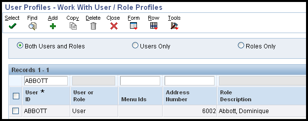
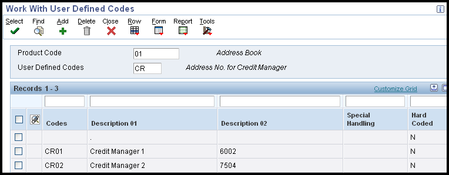

| Goal |
| Solution |
| Overview of Workflow Messages in Credit and Collections |
| Activating Workflow Messages for the Credit and Collection Managers |
| Activating Workflow Messages for Credit Limit Approval |
What workflow is used in Credit and Collections and how do we set it up?
Workflow messages can be used within Credit and Collections to notify credit managers of changes in customer credit limits, and when running Credit Analysis Refresh (R03B525) messages can also be sent to alert collection managers that a delinquency fee has been assessed or a delinquency notice sent for example.
There are two main types of workflow messages which need to be activated in Credit and Collections:
When you add or change the credit limit, the system sends a workflow message to the credit manager. The message indicates that the change is pending approval. This credit limit change will not be reflected on the Customer Master Revision form until the appropriate credit manager approves the change.
Additionally, the system sends workflow messages to the collection manager when you run Credit Analysis Refresh (R03B525), according to the policy set up for the customer.
For the credit and collection managers to receive workflow messages, the user profiles for the user and the credit and collection managers must be associated with a valid address book number. To verify this association, choose User Profiles (P0092) from the System Administration Tools menu (GH9011) and click 'Find'.

User Profile (P0092) screen.
Ensure the users in question are set up with a valid address book number.
Additionally, the credit and collection manager associated with the customer must be set up in User Defined Code (UDC) table 01/CR (for the credit manager) and UDC 01/CM (for the collection manager). The Description 2 field of the UDC record must include the address number of the credit or collection manager.

Work with User Defined Codes (P0004A) screen
With Credit Limit Approval set up, the credit limit changes made in Customer Master Revision (P03013) will not be reflected in the 'Credit Limit' field of the 'Credit' tab until the credit manager has approved the limit via workflow.
For the credit limit approval feature to function properly, the workflow status of CREDLIMIT|1 must be active. If the CREDLIMIT|1 workflow process is not active, the system updates the customer master record with the new credit limit immediately, without the need for credit manager approval. CREDLIMIT is delivered as part of Accounts Receivable Workflow. The workflow process is activated using Object Management Workbench (OMW).
Refer to "Activating a Worfklow Process" in the EnterpriseOne Workflow Tools Guide, available on the Oracle Technology Network.
Please note: When activating the CREDLIMIT workflow, if the credit manager doesn't approve or reject the message in the Work Center (P012503), the messages will "stack up" in the Process Activity Monitor (P98860).
No further messages will be sent.
If needed, go into the P98860 and terminate all messages and then start over with changing the credit limit amount. Once the Credit Manager receives the work center message, he or she needs to approve it and go on to the next message.